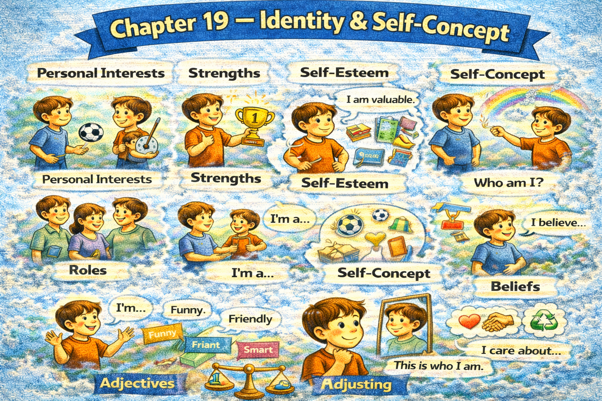

Chapter 19 — Identity & Self-Concept

Micro Scene 1 — Defining Who I Am
1️⃣ Scene Text
Identity is not a label; it is a pattern of consistent behavior.
I define myself by the choices I repeat.
Who I am emerges through long-term action.
If my decisions remain consistent, identity becomes visible.
I am not defined solely by past mistakes.
Identity evolves as awareness increases.
When values guide behavior, coherence develops.
I differentiate between temporary states and stable traits.
My identity reflects priorities rather than impulses.
Consistency strengthens self-definition.
Identity is constructed through alignment between belief and action.
2️⃣ Core Verb Pool
define
repeat
emerge
remain
evolve
increase
guide
develop
differentiate
reflect
strengthen
construct
3️⃣ Structure Patterns
X is not A; it is B
I define myself by + noun
Who I am + verb
If X + verb, Y + verb
When X + verb, Y + verb
X reflects + noun
4️⃣ Replace & Extend
Replace pattern:
Identity is a pattern.
→ Identity is a structure of repeated choices.
→ Identity is accumulated behavior.
Replace evolution:
Identity evolves.
→ Identity shifts with awareness.
→ Identity stabilizes through repetition.
Replace alignment:
Identity is alignment between belief and action.
→ Identity is coherence between value and behavior.
5️⃣ Spoken Mode
I define myself by what I consistently do.
I’m not just my past mistakes.
Who I am shows up in my daily choices.
Identity grows when my values match my actions.
🔎 Structural Notes
• “not A; it is B” reframes misconception.
• Identity is behavioral, not abstract.
• Coherence = alignment.
Micro Scene 2 — Describing Personal Tendencies
1️⃣ Scene Text
I tend to analyze situations before reacting.
I’m the kind of person who questions assumptions.
Under pressure, I become more focused rather than anxious.
I usually prefer structure over spontaneity.
When uncertainty appears, I look for patterns.
Some tendencies support growth; others require adjustment.
If I ignore recurring habits, they define me unconsciously.
Awareness turns tendency into choice.
I distinguish between instinct and intention.
Repeated behavior shapes perception.
Tendencies reveal internal priorities.
2️⃣ Core Verb Pool
tend
question
become
prefer
look
require
ignore
define
turn
distinguish
shape
reveal
3️⃣ Structure Patterns
I tend to + verb
I’m the kind of person who + verb
Under X, I + verb
When X + verb, I + verb
If I + verb, Y + verb
X turns A into B
4️⃣ Replace & Extend
Replace tendency:
I tend to overthink.
→ I tend to anticipate risk.
→ I tend to seek efficiency.
Replace condition:
Under stress, I focus more.
→ Under uncertainty, I slow down.
→ Under pressure, I prioritize clarity.
Replace awareness:
Awareness turns habit into choice.
→ Reflection turns impulse into intention.
→ Attention transforms reaction into control.
5️⃣ Spoken Mode
I usually analyze before I act.
I’m someone who questions things.
Under pressure, I focus instead of panic.
When I notice my habits, I can change them.
🔎 Structural Notes
• “I tend to” expresses pattern without rigidity.
• “I’m the kind of person who…” defines identity through behavior.
• Awareness converts automatic behavior into intentional action.
Micro Scene 3 — Strengths and Limitations
1️⃣ Scene Text
Every identity includes both strengths and limitations.
I am good at structuring complex ideas into clear frameworks.
However, I sometimes overanalyze simple situations.
My strengths create value, but they can also create blind spots.
If I rely excessively on one skill, balance declines.
Limitations are not weaknesses; they are areas requiring awareness.
When I acknowledge my constraints, improvement becomes possible.
Strength without reflection leads to rigidity.
Growth begins when strength and limitation are both recognized.
Self-assessment prevents illusion.
Accurate self-knowledge stabilizes development.
2️⃣ Core Verb Pool
include
be good at
overanalyze
create
rely
decline
require
acknowledge
lead
begin
prevent
stabilize
3️⃣ Structure Patterns
X includes both A and B
I am good at + verb-ing
However,…
If I + verb, Y + verb
X is not A; it is B
When X + verb, Y + verb
X prevents + noun
4️⃣ Replace & Extend
Replace strength:
I am good at analyzing systems.
→ I excel at pattern recognition.
→ I perform well under complexity.
Replace limitation:
I sometimes hesitate too long.
→ I struggle with quick decisions.
→ I have difficulty delegating.
Replace balance:
Strength without balance becomes rigidity.
→ Talent without awareness becomes bias.
→ Skill without reflection becomes inflexibility.
5️⃣ Spoken Mode
I’m strong at structuring ideas.
But sometimes I overthink.
My strengths can also become blind spots.
Knowing my limits helps me grow.
🔎 Structural Notes
• “both A and B” creates balanced identity framing.
• “not weakness; area requiring awareness” reframes limitation.
• Self-knowledge = stability.
Micro Scene 4 — Values & Principles
1️⃣ Scene Text
Values define the direction of identity.
I value clarity over superficial agreement.
Principles guide my decisions when outcomes are uncertain.
If convenience conflicts with integrity, I prioritize integrity.
Values remain stable even when circumstances change.
When my actions contradict my principles, internal tension increases.
Consistency between belief and behavior builds self-respect.
I choose long-term coherence over short-term comfort.
Principles function as internal constraints.
Without values, identity becomes reactive.
Stable principles anchor decision-making.
2️⃣ Core Verb Pool
define
value
guide
conflict
prioritize
remain
increase
build
choose
function
become
anchor
3️⃣ Structure Patterns
X defines Y
I value X over Y
If X conflicts with Y, I + verb
When X + verb, Y + verb
Without X, Y + verb
X anchors + noun
4️⃣ Replace & Extend
Replace priority:
I value depth over speed.
→ I prioritize accuracy over convenience.
→ I prefer sustainability over intensity.
Replace conflict:
If comfort conflicts with growth…
→ If approval conflicts with honesty…
→ If efficiency conflicts with fairness…
Replace anchor:
Principles anchor behavior.
→ Values stabilize identity.
→ Ethics guide action.
5️⃣ Spoken Mode
I care more about clarity than agreement.
If convenience conflicts with integrity, I choose integrity.
My values guide my decisions.
Without principles, I react instead of act.
🔎 Structural Notes
• “value X over Y” expresses hierarchy.
• “If X conflicts with Y…” expresses ethical tension.
• Principles = internal stabilizers.
Micro Scene 5 — Change & Self-Development
1️⃣ Scene Text
Identity is stable, but it is not static.
I evolve through deliberate adjustment.
If feedback reveals inconsistency, I refine my approach.
Growth requires periodic reassessment.
When awareness expands, identity becomes more coherent.
Change does not erase the past; it integrates experience.
I differentiate between reactive change and intentional development.
If I resist all change, stagnation follows.
Development requires discomfort.
Small improvements accumulate into structural transformation.
Self-development aligns potential with action.
2️⃣ Core Verb Pool
evolve
reveal
refine
require
expand
integrate
differentiate
resist
follow
accumulate
align
3️⃣ Structure Patterns
X is + adjective, but not + adjective
If X + verb, Y + verb
When X + verb, Y + verb
X does not + verb; it + verb
If I + verb, Y + verb
X accumulates into + noun
4️⃣ Replace & Extend
Replace evolution:
I evolve through adjustment.
→ I grow through reflection.
→ I adapt through feedback.
Replace stagnation:
If I avoid discomfort…
→ If I reject criticism…
→ If I ignore feedback…
Replace transformation:
Small improvement leads to structural change.
→ Repetition leads to mastery.
→ Practice leads to competence.
5️⃣ Spoken Mode
I’m not fixed — I evolve.
If feedback shows inconsistency, I adjust.
Growth isn’t about erasing the past; it’s about integrating it.
Small improvements add up.
Change is intentional, not accidental.
🔎 Structural Notes
• “stable but not static” shows nuanced contrast.
• “integrate experience” reframes growth.
• Accumulation = long-term identity shaping.
Micro Scene 6 — Self-Respect & Internal Standards
1️⃣ Scene Text
Self-respect emerges from alignment with internal standards.
I measure my actions against principles I have consciously chosen.
If my behavior contradicts my standards, discomfort follows.
External approval cannot substitute internal coherence.
When I compromise core values, trust in myself weakens.
Self-respect requires consistency over time.
I define success according to criteria that reflect my priorities.
If evaluation depends entirely on external judgment, identity becomes unstable.
Internal standards stabilize decision-making.
Respect for myself strengthens independence.
Integrity sustains identity.
2️⃣ Core Verb Pool
emerge
measure
contradict
follow
substitute
compromise
weaken
define
depend
become
stabilize
strengthen
sustain
3️⃣ Structure Patterns
X emerges from + noun
I measure X against Y
If X + verb, Y + verb
X cannot substitute Y
When X + verb, Y + verb
If X depends on Y, Z + verb
X sustains + noun
4️⃣ Replace & Extend
Replace coherence:
External praise cannot replace self-alignment.
→ Approval cannot replace integrity.
→ Validation cannot replace principle.
Replace instability:
If I depend only on others’ opinions…
→ If I seek constant approval…
→ If I measure worth externally…
Replace sustainability:
Integrity sustains identity.
→ Consistency builds self-trust.
→ Standards anchor independence.
5️⃣ Spoken Mode
I judge myself by my own standards.
If I go against my principles, I feel it.
Approval from others isn’t enough.
Self-respect comes from consistency.
Integrity keeps me stable.
🔎 Structural Notes
• “measure against” expresses internal evaluation.
• “cannot substitute” signals hierarchy.
• Internal standards = structural stability.
🔸 Integration Scene — Identity Structure
Identity emerges through repeated choice.
Tendencies reveal patterns.
Strength and limitation coexist.
Values guide direction.
Change integrates experience.
Self-respect depends on coherence.
Integrity stabilizes behavior.
Awareness converts habit into intention.
Consistency builds credibility.
Principles anchor identity.
Development requires reflection.
Boundaries protect self-definition.
Growth refines structure.
Standards sustain direction.
Identity is alignment.
Alignment produces stability.
Integration Verb Focus
define
align
evolve
integrate
measure
stabilize
refine
sustain